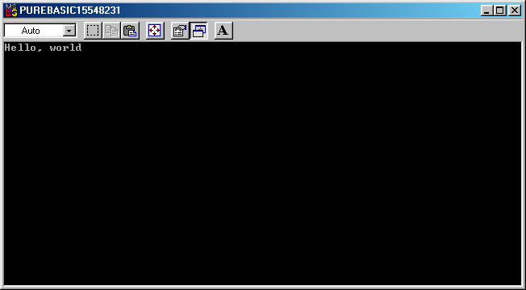

Wir werden demonstrieren, wie Programme in PureBasic geschrieben werden, indem wir Ihnen ein Beispiel geben. Vergewissern Sie sich, dass der PureBasic Editor läuft, wie im vorherigen Kapitel beschrieben, und geben Sie den folgenden Code ein (oder öffnen Sie ihn von hier):
OpenConsole()
PrintN("Hallo, Welt")
Input()
CloseConsole()
End
Wenn Sie den Code aus diesem Handbuch eingegeben oder kopiert und eingefügt haben,
müssen Sie diesen erst noch speichern bevor Sie ihn kompilieren können. Benutzen Sie
den "Datei Menü->Speichern als" Eintrag, um den Quellcode an eine beliebige
Stelle unter dem von Ihnen gewünschten Namen zu speichern. Sie werden die Datei sicher
mit der Endung ".pb" speichern wollen, da diese mit dem Editor verknüpft ist.
Sobald Sie die Datei gespeichert haben, können Sie sie ausführen. Verwenden den "Compiler Menü->Compilieren/Starten" Eintrag oder drücken Sie die "F5"-Taste. Wenn Sie Fehler in Ihrem Quellencode angezeigt bekommen, vergleichen Sie den von Ihnen geschriebenen Code mit dem auf dieser Seite und korrigieren Sie die Fehler. Vergewissern Sie sich, Ihren Code zu speichern, bevor Sie Ihr Programm erneut kompilieren und starten.

| Vorheriges Thema | Kapitel-Inhalt | Nächstes Thema |
|---|---|---|
| Grundlagen der PureBasic Sprache | Benutzerhandbuch Inhalt | Aufschlüsselung und Erklärung des Programms |